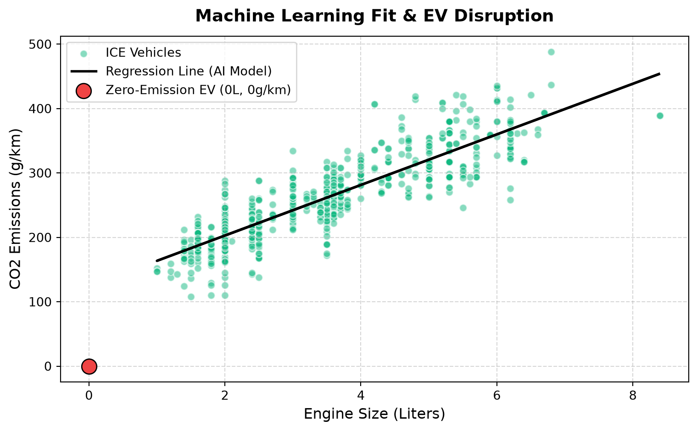

K-12 Data Science: Multiple Regression, Regulatory Audits, and EV Disruption
Affiliate Disclosure: Some links below are affiliate links. If you purchase hardware or data tools through these links, this site earns a small commission at no additional cost to you, helping fund our K-12 STEM outreach programs.
Project Overview
Welcome to the Environmental Compliance Agency (ECA). An auto manufacturer is claiming their new fleet of vehicles has an ultra-low carbon footprint. Your team’s job is to audit their specifications using historical fleet data. We will fetch a live dataset directly from the web, visualize the distributions, overlay regulatory thresholds, and train a Linear Regression machine learning model to verify their emission claims.
Modern data pipelines fetch data directly from web servers using code. We will use Pandas to download the IBM dataset.
import pandas as pdimport numpy as npimport matplotlib.pyplot as pltfrom sklearn import linear_model# Ingest data directly from a public URLurl ="https://cf-courses-data.s3.us.cloud-object-storage.appdomain.cloud/IBMDeveloperSkillsNetwork-ML0101EN-SkillsNetwork/labs/Module%202/data/FuelConsumptionCo2.csv"df = pd.read_csv(url)# Select the features we want to investigatecdf = df[['ENGINESIZE', 'CYLINDERS', 'FUELCONSUMPTION_COMB', 'CO2EMISSIONS']]print(cdf.head())
The EPA has issued a strict emissions threshold of 250 g/km. Let’s plot Engine Size vs. CO2 Emissions and overlay the regulatory red line. How many vehicles are failing the audit?
The solid line represents our AI’s learning (y = mx + b). What happens if we release an Electric Vehicle (EV) with an Engine Size of 0.0L and 0 CO2 emissions? Does the model predict zero, or is there an intercept error?
plt.figure(figsize=(8, 5))plt.scatter(train.ENGINESIZE, train.CO2EMISSIONS, color='#10b981', alpha=0.5, edgecolors='w', label="ICE Vehicles")plt.plot(train_x, regr.coef_[0][0]*train_x + regr.intercept_[0], '-k', linewidth=2, label="Regression Line (AI Model)")# EV Disruption Data Pointplt.scatter([0], [0], color='#ef4444', s=150, zorder=5, edgecolors='black', label="Zero-Emission EV (0L, 0g/km)")plt.title("Machine Learning Fit & EV Disruption", fontsize=14, fontweight='bold', pad=12)plt.xlabel("Engine Size (Liters)", fontsize=12)plt.ylabel("CO2 Emissions (g/km)", fontsize=12)plt.legend(loc="upper left")plt.grid(True, linestyle="--", alpha=0.5)plt.tight_layout()plt.show()

Pedagogical Goals & Extension Ideas
Data Literacy: Ensure students understand the difference between a histogram (data spread) and a scatter plot (variable relationship).
The “What-If” Intercept Lesson: The final plot is a crucial talking point. The regr.intercept_ is around 125. Ask students: If an EV has a 0-liter engine, our math (y = mx + 125) says it emits 125g of CO2. Why is the AI wrong? This highlights the danger of out-of-distribution prediction.
Challenge Activity: Have advanced students rewrite the scikit-learn code to perform Multiple Linear Regression by feeding it train[['ENGINESIZE', 'CYLINDERS', 'FUELCONSUMPTION_COMB']] to see if the error improves compared to using just engine size.